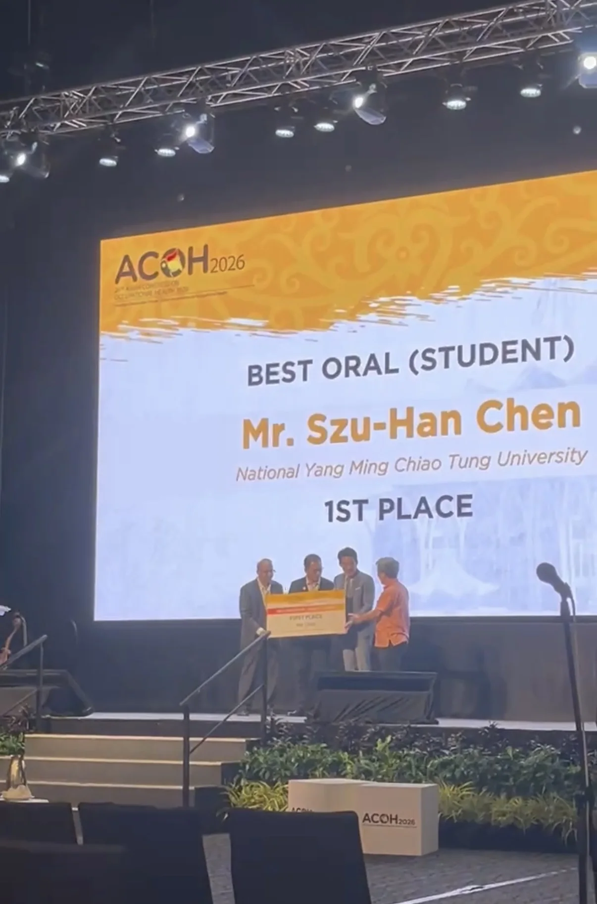
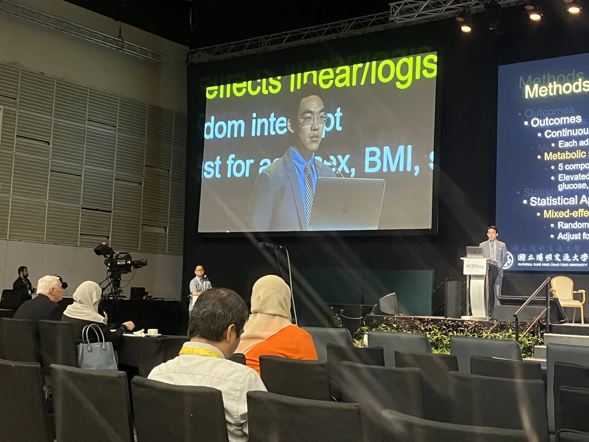

在古晉參與 ACOH 2026
2026 年 8 月 6–8 日，我在馬來西亞砂拉越古晉參加第 24 屆亞洲職業衛生大會（Asian Congress on Occupational Health, ACOH 2026）。ACOH 每三年舉辦一次，是亞洲具代表性的職業衛生國際會議；本屆共有來自 30 多個國家、超過 1,400 名與會者，交流職業衛生、職業醫學與工作者健康的最新研究。
口頭報告競賽第一名
這次我以「METABOLIC HEALTH DISPARITIES AMONG VIETNAMESE MIGRANT AND DOMESTIC METAL WORKERS IN TAIWAN: A 3-YEAR RETROSPECTIVE COHORT STUDY」為題參加口頭報告競賽，最後有幸從眾多參賽者中脫穎而出，獲得第一名。
這項三年回溯性世代研究關注同在臺灣金屬產業工作的越南籍移工與本國勞工，希望從長期資料理解兩個群體之間的代謝健康差異。對我而言，這不只是一個研究問題，也直接關係到工作者健康、健康公平，以及職場健康照護如何回應不同勞動族群的需要。
能在來自不同國家的研究者與職業衛生實務工作者面前分享這項研究，並獲得評審肯定，是一份很大的鼓勵。這次經驗也再次提醒我：好的研究除了方法嚴謹，更需要把問題說清楚，讓研究結果能被理解，並有機會走向實際的健康改善。
感謝
特別感謝衛生福利研究所藍凡耘老師一路以來的指導。從研究推進到口頭報告的準備，老師給予許多重要的建議與支持；能在老師的見證下獲得這份榮譽，對我而言格外有意義。也謝謝所有參與、協助與支持這項研究的師長及夥伴，這個成果屬於一路共同投入的每一個人。
繼續前進
這次獲獎是一份肯定，也是一個新的起點。期待自己繼續把對健康不平等的關心，轉化為更扎實、更能回應現場需求的研究，讓職業健康的證據真正被看見，也能為不同背景的工作者帶來更公平的健康機會。

